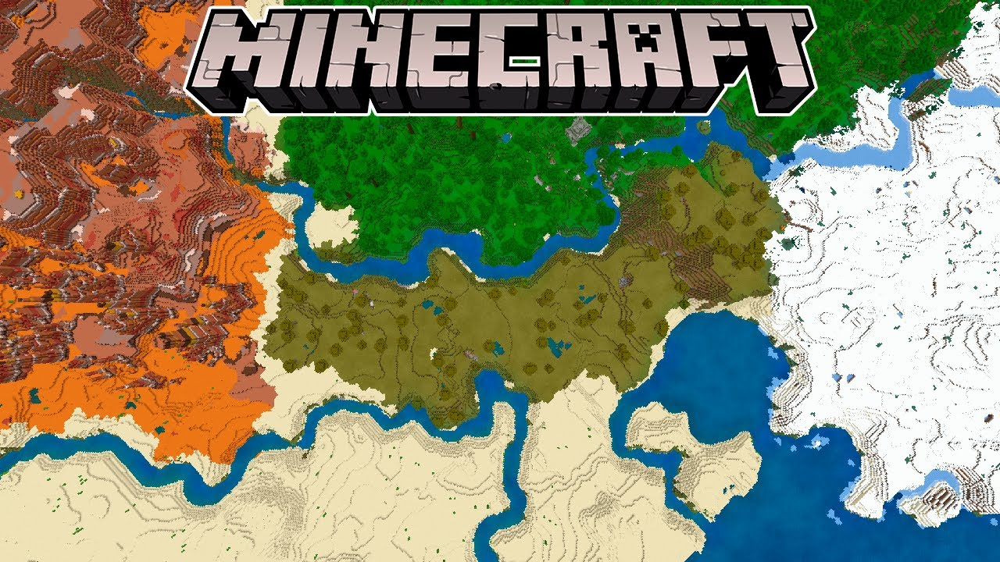
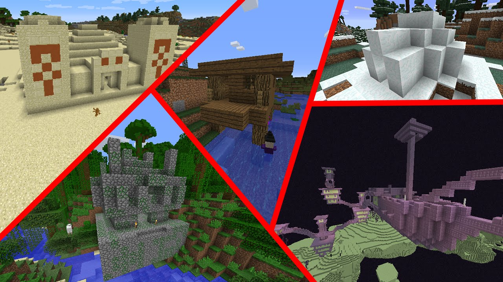

El Overworld es la única dimensión creada cuando el jugador crea un nuevo mundo. Las otras dimensiones (The Nether y The End) no se crean hasta que un jugador ingresa a la dimensión correspondiente por primera vez..
Se genera un nuevo mundo en Minecraft mediante el uso de una semilla generada aleatoriamente, que es un número entero que se usa como punto de partida para la fórmula de generación del mundo. El jugador puede especificar una semilla o permitir que el juego genere una al azar. Si se le da una entrada que no es un número entero (como la palabra "Glacier"), el juego la convierte en un número entero correspondiente (como 1772835215).
Una semilla determinada genera casi exactamente el mismo mundo cada vez, siempre que se use la misma edición , versión del juego y tipo de mundo . Aunque el punto de aparición exacto varía, las coordenadas de todas las características del terreno son las mismas. Todas las semillas dentro del límite de enteros de 32 bits en las ediciones Java y Bedrock también pueden generar mundos con la misma forma de terreno y mapa de bioma, pero la ubicación de las características del terreno, las estructuras y las cuevas talladoras pueden diferir.
El Overworld es un entorno increíblemente complejo con una amplia variedad de características.
El Overworld se divide en biomas de varios tipos. El tipo de bioma determina las características básicas del terreno dentro de él, como los bloques que componen la superficie o las plantas que prosperan en él. El tipo de bioma también determina qué mobs pueden generarse dentro de él y afecta la forma en que se expresan los comportamientos ambientales, como el clima .

El Overworld está compuesto por una gran cantidad de patrones de terreno, llamados estructuras generadas , cuya disposición varía ampliamente de una semilla a otra. Las estructuras exactas son exclusivas de cada mundo, mientras que los tipos de estructuras que se pueden generar en un lugar determinado están determinados por el tipo de bioma. Las estructuras están destinadas a representar equivalentes del mundo real, como montañas , cuevas y lagos . Formaciones "imposibles" (en el mundo real), como islas flotantes , también se pueden encontrar en todo el Overworld.

| BIOMA | CARACTERÍSTICAS | DESCRIPCIÓN |
|---|---|---|
| Llanura Elevada |
|
Un bioma expansivo y plano con grandes cantidades de capas de nieve. Se generan cañas de azúcar en este bioma, pero pueden despegarse del suelo cuando se cargan los chunks y las fuentes de agua se convierten en hielo. Se generan robles[Solo Java Edition] y abetos en este bioma. En cuanto a animales, solo se generan conejos y osos polares. Sin embargo, es uno de los pocos biomas donde aparecen esqueletos glaciales. En la versión Bedrock, solo se generan esqueletos y esqueletos glaciales, pero con generadores se pueden generar monstruos. Gracias al tamaño del bioma y la escasez de madera y animales, al principio la supervivencia puede ser difícil en comparación con otros biomas. Este es uno de los dos biomas donde se generan iglús de forma natural. También se pueden generar aldeas y puestos de saqueadores. |
| Llanura |
|
UUn bioma plano y herboso con pendientes suaves y unos pocos robles. Lagos, pequeñas cuevas submarinas y aldeas son comunes. Las ntradas a cuevas, los lagos de lava y las cataratas son fáciles de identificar por el terreno plano sin obstaculos. Los mobs de granja se encuentran facilmente en las llanura; este bioma y sus variantes también son los unicos biomas donde los caballos spawnean naturalmente. Los puestos de saqueadores tambien pueden ser generados. |
| Colinas de bosque oscuro |
|
Una variante del bosque oscuro donde las colinas dominan el área. Mientras mas luz hay en el bosque menos mobs aparecen, Las montañas en este bioma todavia lo hacen un lugar peligroso para caminar. |
| Desierto |
|
Un bioma árido e inhóspito que consiste principalmente en dunas de arena, arbustos muertos y cactus. Debajo de la arena se encuentran arenisca y, a veces, fósiles. Los únicos mobs pasivos que se reproducen naturalmente en los desiertos son los conejos dorados/cremosos, con su color bien camuflado contra la arena. Por la noche, las cáscaras suelen aparecer en el lugar de los zombis normales; la falta de obstrucción visual hace que las turbas hostiles sean muy visibles. La caña de azúcar se puede encontrar si el desierto está al lado de un bioma oceánico o fluvial. Las aldeas del desierto, los pozos del desierto y las pirámides del desierto se encuentran exclusivamente en este bioma. Los puestos de saqueo también pueden generarse aquí. Este bioma a veces aparece como un borde delgado alrededor de los biomas de tierras baldías. |